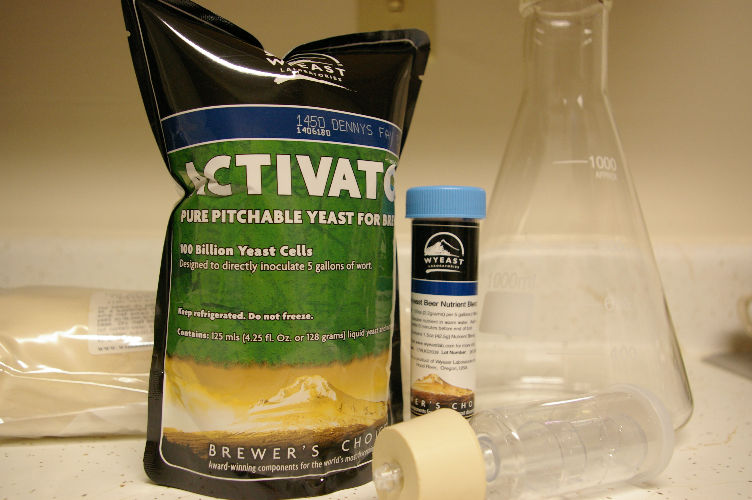
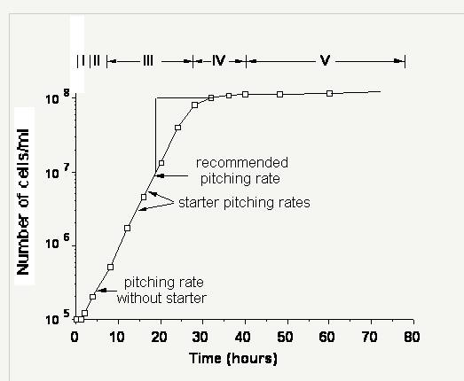

Publié le 27 février 2017

- Atténuation : % de fermentation du sucre.
- La floculation c'est l'agglomération des levures. Les lagers restent en suspension plus longtemps et réduisent davantage les sous-produits.
- Pour le transport, utiliser un time-temperature ou un freeze indicator (Levure dans un char l'été juste 30 minutes diminue la viabilité)
- Peu importe la marque de la levure, il est davantage important de prendre la plus fraîche.
- Dans les levures Wyeast il y a une petite bulle où on retrouve des nutriments de bonne qualité et du sucre, en plus d'aider à rincer le paquet pour avoir le plus de levures possible.
- Une petite quantité de levure en santé donnera une bière bien meilleure qu’une grande quantité de levure en mauvaise santé.
- Garder une culture pure.
- Facteurs influençant la viabilité et l’accroissement des cellules: nutriments, température, sucre et pH.
- Autolyse des cellules est rarement un problème, puisque ca prend plusieurs mois.
- Connaître les caractéristiques de la souche de levure afin de faire ressortir certains aspects. Par exemple, passer d'une levure de Californie à une levure anglaise pour la même recette de bière brune accentue le goût sucré du malt et des esters fruités.
- Utiliser plusieurs levures: pour augmenter l'atténuation, on peut ajouter des levures spécifiques à la fin de la fermentation en calculant avec le sucre restant l'impact que ça aura. Si on fait ça, on ne peut pas réutiliser la levure.
- Isomérisation des acides alpha affecte la viabilité des levures
- Nutriments à levures: souvent zinc en manque. Ajouter 0,2 A 0,3 mg/L de zinc, Nitrogène pour les enzymes lors de la fermentation, Calcium pour la floculation, Manganèse pour stimuler la reproduction
Fermentation
Température
- Enregistrer la température de fermentation avec un data logger à température
- Premier 72h plus critiques, car la majeur partie du travail s’effectue à ce moment. S’assurer d’empêcher la température d’augmenter trop.
- Si bon pitch rate, idéalement mettre la levure en dessous de la température de fermentation puis augmenter graduellement en 12 à 36h, ce qui permettra de contrôler la multiplication des levures.
- Si on pitch avec un peu moins de levure, pitch à une température plus élevée va aider la multiplication. Dans ce cas, il faut remonter la température à la fin de la fermentation, afin de retransformer certains composés et aider à la clarté de la bière.
- Ale: lag phase: 22-24C puis 20
- Lager: lag phase: 22-24 puis 10-14
- Levures belges doivent être fermentées en haut de 23C
Oxygène
- On veut 8 A 10 ppm. Selon Wyeast 12 a 15ppm.
- Correspond à 45 secondes de brassage de cuve (8 ppm), ou une à deux minutes avec de l’oxygène pure et une pierre de diffusion (15 ppm).
- Mettre de l'oxygène avant de pitcher.
- Pour une bière très haute en gravité, il faudra l'oxygéner après 12h.
- Trop d’oxygène est rarement un problème
| Méthode |
Quantité d'oxygène dissout |
Temps requis |
| Éclaboussures lors du transfert vers le fermenteur |
4 ppm |
0 secondes |
| Brasser vigoureusement la cuve de fermentation primaire |
8 ppm |
40 secondes |
| Pompe d'aquarium avec une pierre de diffusion |
8 ppm |
5 minutes |
| Oxygène pure avec une pierre de diffusion |
10-14 ppm |
1 à 2 minutes |
Quantité de levures
Afin de reproduire plus d'une fois une bière, il est important que la quantité de levure utilisée soit constante. Il est possible d'estimer la quantité de levure nécessaire avec des calculatueurs tels que
Brewer's friend ou
Mr. Malty en fonction du volume ou masse de levure utilisé, ou encore à partir du nombre de paquets et de la date de production. Il est également possible de compter les cellules vivante pour augmenter la précision.entier.

Yeast Starter
Le
yeast starter consiste à activer la reproduction des cellules afin d'avoir une quantité de levures de départ suffisante pour la quantité de sucre à transformer.
- Nécessaire pour des levures liquide seulement
- 27 a 30C selon internet, 22 selon le livre Yeast. Si trop chaud, affaiblir les cellules.
- Conditions normales: 1.030 et 1.040.
- Pour redonner vie à de vieille levure, utiliser un mout autour de 1.020
- Un paquet de levures avec 2L d'eau et 200 g d'extrait de malt va doubler la quantité de cellule en 24 heures. Ensuite on la met au frigo pour faire décanter. Prendre la densité du liquide fermenté et jeter le surplus.
- 1g de DME pour chaque 10 ml de volume final de mout.
- Ale: 10 ml 8P 25C, 24 heures en aérant et en brassant de temps en temps. 100ml 8P, 25C, 24h en aérant et avec l’agitateur magnétique. 1L 12-16P, 22C, 24-48h aérant et avec l’agitateur magnétique.
- Pas besoin de mettre de nutriment si ça vient du paquet. Par contre si levure réutilisé, oui.
- pH idéal de 5.5 pour yeast starter
- Pas de lumière
- Laisser 12 heures dans le même bocal lorsqu’il a atteint sa gravité finale permet aux levures de remplir leur réserve de glycogène. Si on décante trop tôt, on va éliminer les levures qui sédimentent moins vite, ce sont eux qui atténuent la bière le plus.
- Lors du pitch, maximum 6C de différence pour High krausen. Utiliser la méthode high krausen si on veut atténuer davantage une bière, car l’alcool et le bas taux de sucre empêche les levures de se réveiller.
- Stepped starter: décanter entre chaque étape.
- Idéalement on ne voudrait pas utiliser de levures en bas de 90% de viabilité
Comptage de cellules (utiliser un Hemocytomètre)
Lorsqu’on récolte la levure, elle est entre 0,8et 2 millions de cellules/ ml. Lorsqu’on connait la densité de la bouette, on divise le nombre de cellules requises par le nombre de cellules/ml afin de déterminer combien de millilitres de bouette on a besoin.
C’est un peu contre-intuitif. Comme c’est généralement lors de la multiplication que la levure s’exprime en esters et en phénols, plus on met de levure, moins les saveurs sont intenses. Une saison belge avec beaucoup de levure de départ sera donc plate et trop simple. Il faut que la levure travaille pour développer les saveurs complexes. Une pâle ale avec très peu de levure sera aussi trop « levurée » et fruitée. C’est important d’avoir une bonne quantité de levure en santé. Mais pas trop.
Diacetyl rest
C’est la réabsorbtion du diacetyl par les levures. Consite à monter la température avant la fin de la fermentation.
- Lors de la multiplication des cellules, un taux de croissance plus haut entrainera plus d’acétolactate (précurseur du diacetyl).
- S’assurer de faire un diacetyl rest pour une biere anglaise
- Plus la température est haute, plus il y a de multiplication, mais également plus la réduction du diacetyl sera importante.
- Plus les levures sont en santé et actives, plus ils réduiront rapidement le diacetyl.
- Séparer la bière de la levure ou refroidir la bière trop tôt entrainera un haut taux de diacetyl.
- Plus la température est froide, plus il y aura de sulfure et il sera plus difficile pour la levure de réabsorber le diacetyl, d’où l’importance de faire un diacetyl rest
- Force test for diacetyl.
- Consiste à prendre deux échantillons et d’en chauffer un seul puis le refroidir et le comparer à l’autre. Si on perçoit le diacetyl, il ne faut pas transférer.
- Lager: fermentation a 8-10C pendant 2/3 de la fermentation, puis 20C pendant le dernier 1/3. Ou ajouter du mout frais en fermentation (au kraeusen) )à la fin
- Ale: Si la fermentation était en bouette (sluggish) élever la température de 3C ou attendre deux jours lorsque la gravité finale est atteinte pour s’assurer de laisser le temps aux levures de réduire le diacetyl.
Récoltes et conservation
- Récupérer les levures avec une cuillère en enlevant le dessus
- Les levures peuvent se conserver, autour de 2C, 1 à 2 semaines sans refaire de starter.
- À VÉRIFIER rythme de mortalité au frigo.
- Une augmentation du pH de 1 indique un haut taux de mortalité et on devrait jeter la levure
- Récolter les levures au stade optimal et être constant dans le comptage des cellules ou le poids de la bouette, inscrire ces informations au registre
- Le meilleur moment pour récolter la levure est un à deux jours après avoir commencé le cold crash.
- Attendre 24h de plus peut diminuer de 50% la viabilité de la levure.
- Entreposer les levures sèches également au frigo
- Si on récupère les levures d’une bière avec beaucoup d'alcool, il est préférable d'enlever la bière et de le remplacer par un mout frais ou de l'eau stérile, ou de ne pas la récupérer simplement. On ne devrait jamais réutiliser de la levure qui a fermenté une bière de plus de 7%
- À VÉRIFIER: réutiliser des levures à partir de bouteilles
- Réutiliser les levures de 5 A 10 générations. Est-ce qu’un yeast starter compte pour une génération ?
Top Cropping (Yeast P.148-156)
La technique de Yeast crop consiste à récupérer les levures sur le dessus pendant la fermentation. Personellement je crois que c’est de la marde parce qu’on enlève des levures à une batch et on en met pas assez pour une autre.
- Récolter les levures sur le dessus de la fermentation permet d’avoir de la levure en santé et de maintenir la qualité de la bière.
- Les levures German weizan et belges ne sont pas super bonne pour récolter au fond puisqu’elles ne sédimentent pas beaucoup. Récolté sur le dessus permettra de maintenir la levure en meilleure santé pour de plus longues générations.
- Le meilleur moment pour récolter sur le dessus est lorsque la mousse est à son maximum. Le premier tiers de la mousse est riche en protéine, on ne le veut pas. On veut les deux autres tiers.
- Utiliser une large cuillère en inox.
- Essayer d’enlever le couvercle lorsqu’il n’y a pas de mouvement de l’air. Ne pas enlever le couvercle complètement.
Bottom cropping
- Désavantages: Plus de déchets dans les sédimentations, c’est plus long avant de récupérer les levures, les levures sont sous la pression, il y a de la mauvaise levure.
- Lorsque la fermentation est terminée, les levures commencent à utiliser leurs réserves et “break down”
Rinçage de levures (Yeast P.168)
Mettre le slurry dans le l'eau stérile, brasser vigoureusement, laisser reposer 10 A 15 minutes. Décanter le dessus, récupérer le milieu et jeter le fond, 4x le volume de slurry en eau, Contenant étroit et haut laissé du vide en haut
Revitaliser
0,5 ml de mout A 1,080 par 10 ml de slurry sans aération pendant 4 A 12 heures. Prendre le liquide en suspension en décantant et jeter le fond